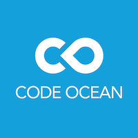
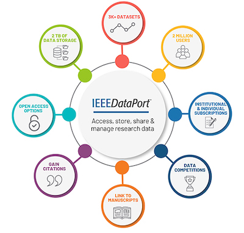

Code Ocean
Code Ocean aims to make the world's scientific code more open and reproducible by allowing authors to share their algorithms in a cloud-based, executable research platform. Uploading your algorithms and associated data files to the Code Ocean site is easy. Anyone can run an algorithm posted to Code Ocean, modify it, and test the modifications. The published algorithm that an author posts will remain unchanged.
Any author that has had an IEEE journal article published on IEEE Xplore in the past five years can upload associated algorithms to Code Ocean by visiting https://codeocean.com/signup/ieeeOnce the algorithm is uploaded to Code Ocean, it will be automatically linked to the associated article in IEEE Xplore. Users in IEEE Xplore will be able to discover and access the link to run the algorithm in Code Ocean.
View instructions for Code Oceans submissions.
Further information about using Code Ocean can be found at:
https://help.codeocean.comIEEE DataPort™

CSS authors now have an option to submit their research data to IEEE DataPort during the article submittal process and link the data to their submitted article. This supports research reproducibility and enables the author to store and manage their research data. If data is submitted and the article is published in Xplore, there will be a "Datasets Available" icon and a link to the dataset for Xplore readers. Contact dataport@ieee.org if you have questions about submitting your data.
IEEE DataPort serves as a valuable and easily accessible repository of datasets and data analysis tools. The repository is designed to accept all types of datasets, including Big Data datasets up to 2TB, and it provides both downloading capabilities and access to cloud services to enable data analysis in the cloud. IEEE DataPort is a universally accessible, web-based portal that serves four primary purposes:
- Enable individuals and institutions to make datasets easily accessible to a broad set of researchers, engineers and industry;
- Enable researchers, engineers and industry to gain access to datasets that can be analyzed to advance technology;
- Make data analysis tools and capabilities available to enable analysis of datasets;
- Retain referenceable data for reproducible research.